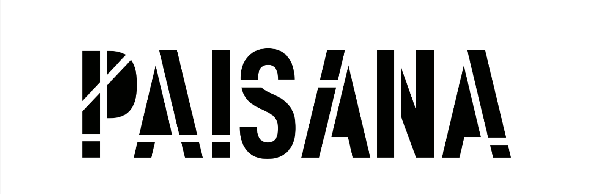

PAISANA surge como o meu 1ª trabalho de desenvolvimento gráfico de logótipo, marca e respetivo manual de normas, juntamente com aquilo que seriam os ideais dessa empresa fictícia. Um projeto no âmbito da Unidade curricular de Projeto em Design I do segundo semestre do primeiro ano da licenciatura em design na Universidade de Aveiro.
PAISANA é uma organização que visa alertar para o consumo e desperdício de plástico, entre outros resíduos no dia a dia e como estes impactam o ambiente. Através da parceria com escolas pretendemos também criar nas crianças e não só nas gerações mais novas mas naqueles que os acompanham, um sentimento de que podem ajudar a fazer a diferença ao participarem nesta iniciativa promovida pela nossa marca. Os nossos valores assentam na proteção e manutenção de um ambiente mais sustentável e livre de poluição
